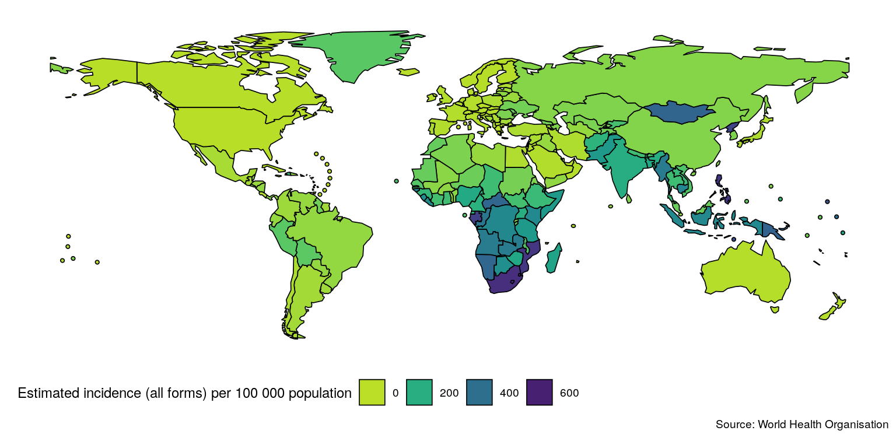
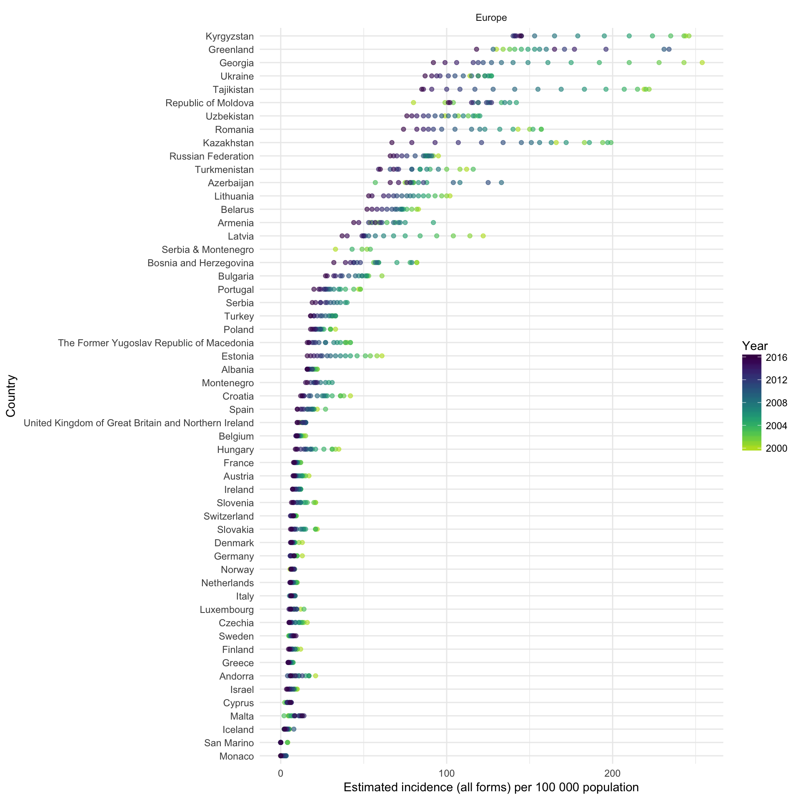
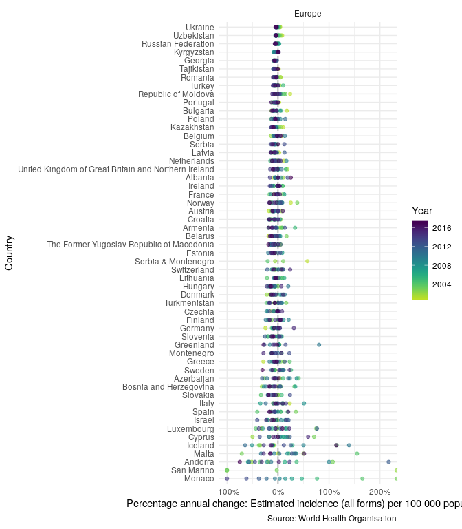
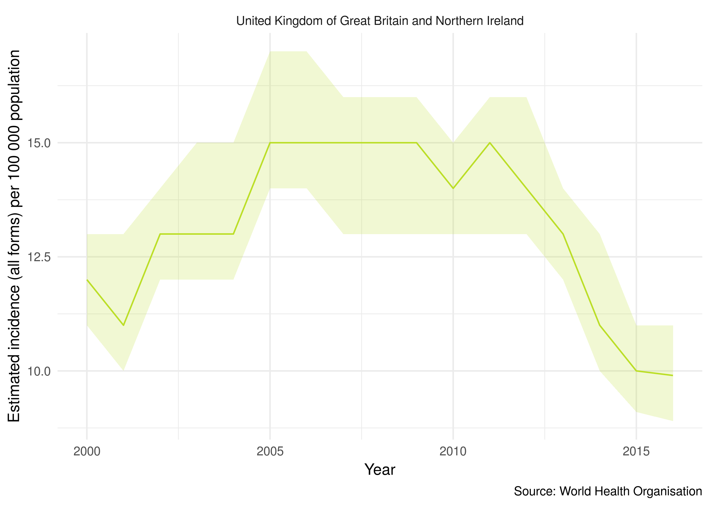

Quickly and easily import analysis ready TB burden data, from the World Health Orgnaisation (WHO), into R. The aim of the package is to speed up access to high quality TB burden data, using a simple R interface. Generic plotting functions are provided to allow for rapid graphical exploration of the WHO TB data. This package is inspired by a blog post, which looked at WHO TB incidence rates. See here for the WHO data permissions. For help getting started see the Getting Started vignette and for a case study using the package see the Exploring Global Trends in Tuberculosis Incidence Rates vignette.
Installation
Install the CRAN version:
install.packages("getTBinR")Alternatively install the development version from GitHub:
# install.packages("devtools")
devtools::install_github("seabbs/getTBinR")Quick start
Lets get started quickly by mapping and then plotting TB incidence rates in the United Kingdom. First map global TB incidence rates in 2016 (this will also download and save both the TB burden data and its data dictionary, if they are not found locally, to R’s temporary directory),
getTBinR::map_tb_burden(metric = "e_inc_100k",
year = 2016,
download_data = TRUE,
save = TRUE)
#> Downloading data from: https://extranet.who.int/tme/generateCSV.asp?ds=estimates
#> Saving data to: /tmp/RtmprchsnX/TB_burden.rds
#> Downloading data from: https://extranet.who.int/tme/generateCSV.asp?ds=dictionary
#> Saving data to: /tmp/RtmprchsnX/TB_data_dict.rds
#> 1 results found for your variable search for e_inc_100k
Then compare TB incidence rates in the UK to TB incidence rates in other countries in the region,
getTBinR::plot_tb_burden_overview(metric = "e_inc_100k",
countries = "United Kingdom",
compare_to_region = TRUE,
interactive = FALSE)
#> Loading data from: /tmp/RtmprchsnX/TB_burden.rds
#> Loading data from: /tmp/RtmprchsnX/TB_data_dict.rds
#> 1 results found for your variable search for e_inc_100k
In order to compare the changes in incidence rates over time, in the region, plot the annual percentage change (note that this functionality is currently only available in the development version of the package),
getTBinR::plot_tb_burden_overview(metric = "e_inc_100k",
countries = "United Kingdom",
compare_to_region = TRUE,
annual_change = TRUE,
interactive = FALSE)
#> Loading data from: /tmp/RtmprchsnX/TB_burden.rds
#> Loading data from: /tmp/RtmprchsnX/TB_data_dict.rds
#> 1 results found for your variable search for e_inc_100k
#> Warning: Removed 16 rows containing missing values (geom_point).
Finally plot TB incidence rates over time in the United Kingdom.
getTBinR::plot_tb_burden(metric = "e_inc_100k",
countries = "United Kingdom",
facet = "country",
interactive = FALSE)
#> Loading data from: /tmp/RtmprchsnX/TB_burden.rds
#> Loading data from: /tmp/RtmprchsnX/TB_data_dict.rds
#> 1 results found for your variable search for e_inc_100k
See Functions for more details of the functions used (note the fuzzy country matching, map_tb_burden, plot_tb_burden_overview and plot_tb_burden will try to exactly match your country request and if that fails will search for partial matches) and for more package functionality. We could make these plots interactive by specifying interactive = TRUE
Additional Functionality
File an issue here if there is a feature, or a dataset, that you think is missing from the package, or better yet submit a pull request!
Docker
This package has been developed in docker based on the rocker/tidyverse image, to access the development environment enter the following at the command line (with an active docker daemon running),
docker pull seabbs/gettbinr
docker run -d -p 8787:8787 -e USER=getTBinR -e PASSWORD=getTBinR --name getTBinR seabbs/gettbinrThe rstudio client can be accessed on port 8787 at localhost (or your machines ip). The default username is getTBinR and the default password is getTBinR.